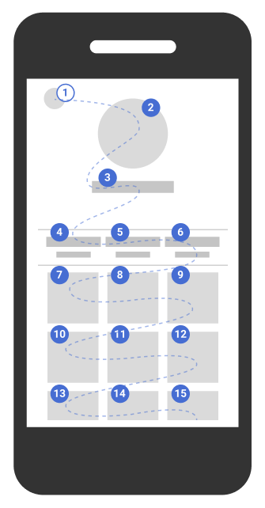

Web develop - Keyboard navigation
Ensure the user can navigate using the keyboard only
Allow the use of the main features of the application with the keyboard #
Target: everyone, especially people with motor or visual impairment and using a device outdoors.
When: as of design and during development.
Description:
Implement event handlers that don’t rely on mouse events only, therefore allow to be controlled by the keyboard and this without time limit.
Checklist:
- All the important actions performed with the mouse can also be done with the keyboard, even if you have to provide a specific alternative for the complex interactions (drag'n'drop, gestures with several fingers on mobile ...) while avoiding countless strikes.
- Make maximum use of the basic HTML interactive components (fields, links, buttons), these being natively accessible to the keyboard. Otherwise, ensure that the custom components are keyboard operable in a conventional manner.
- All important actions performed with a mouse must also be reproduced with the keyboard, even complex interactions (drag & drop, mobile touch gestures…).
See how to navigate with a keyboard in a web browser.
Users’ goal:
Allow users who cannot use the mouse (blind, motor disabled, mobile web, outdoor…) to access the main features of the application with the keyboard.
Do:
- A sub-menu displayed when the mouse is over an element must also be displayed when the parent menu item receives the keyboard focus.
- In a webmail, right-clicking on the “trash” icon opens a menu to empty the trash, this option should be also available from an “empty the trash” button elsewhere in the interface or from a drop-down menu accessible with the keyboard.
Don’t:
A functionality only available through drag & drop and without any keyboard equivalent.
WCAG reference:
The focus order must be sequential and logical without keyboard trap #
Target: everyone, especially people with motor or visual impairments and using a device outdoors.
When: during development.
Description:
Elements (links, buttons, form fields) must receive the focus in a logical order (top to bottom, left to right) when the focus order is necessary for understanding contents or for keyboard operability, even for dynamically generated content appearing or disappearing (DOM modification, Ajax,…). Of course, the focus must not be trapped or blocked.
Example (numbered bullets indicate how the focus moves in the page) :

Checklist:
- To validate this requirement, the focus position must be visible at all times (
outlineand:focusCSS properties), see requirement "Make the focus visible at all times" below. - Be careful, the order of appearance of the elements in the HTML code must be the same as the order in which the focus is moved though the page, if this order is important to understand or to be able to use the interface. An element at the end of the source code but positioned at the top of the page via CSS will be the last to receive the focus. It's the easiest solution!
- For maintainability, avoid using the
tabindexattribute with values higher than 0. - Even for dynamically generated content or for SPA Single Page App, it is necessary to keep this logical and sequential the focus order. This is true for dynamically generated content or for SPAs (single page applications). For more details, see Recommendations for Single Page Applications and Manage Focus for Dynamic Content
Users’ goal:
Allowing logical navigation without “trapping” the keyboard in the pages of the application. Necessary for users navigating with the keyboard (visually impaired, motor impaired, cognitive impaired, using a device outdoors).
Do:
In a page dedicated to search in the site content, the focus order should first go to the search form before going to the list of the results.
Don’t:
A page containing a video player where the focus can enter the player, but cannot get out (keyboard trap).
WCAG references:
Make the focus visible at all times #
Target: everyone and especially people with visual impairments, cognitive limitations, motor disabled, having attention difficulties or using a device outdoors.
When: as of design and during development.
Description:
Do not hide the focus and if necessary make it visible enough (e.g. by modifying the outline CSS property) on all elements likely to receive it (links, buttons, form elements). You can also accentuate the visibility of the focus so that it is easily identifiable.
Make sure to provide a sufficient level of contrast so that it is visible to all (see measure the level of contrast of colors).
When an effect is visible on an element during mouse-over (e.g. :hover CSS property), this effect must also be displayed when capturing the focus (:focus).
It is possible, with Javascript code, to display the outline only during a keyboard navigation (ie not to display the outline when clicking a mouse, which also activates the : focus state:
var head = document.head || document.getElementsByTagName(’head’)[0];
var axsStyles = head.appendChild(document.createElement(’style’));
document.addEventListener(’mousedown’, function() {
axsStyles.innerHTML = ’* {outline:none !important}’;
});
document.addEventListener(’keydown’, function() {
axsStyles.innerHTML = ’’;
});
Demonstration of visibility of focus on keyboard navigation only
Checklist:
In many front-end frameworks or CSS resets, the outline property (to visualize the focus) is disabled (outline: none;), don’t forget to redefine it and check that the focus is visible on all focusable elements.
Users’ goal:
Allow focus visibility on all elements, especially for keyboard users (visually impaired, motor disabled or those with attention or memory difficulties and using devices outdoors).
Do:
Focus set on the « Apple iPhone 5s argent » link, clearly visible.

Don’t:
Focus set on the « Apple iPhone 5s argent ».

WCAG reference:
Ensure that the interactive element receiving keyboard focus is always at least partially visible in the user's viewport. #
Target : everyone, especially people without visual impairment and using keyboard navigation and/or attention difficulties and people using a screen magnifier.
When : as of conception but mainly during development
Description :
When an interactive component receives keyboard focus, this element is not totally hidden by any other content. Pay particular attention to sticky headers and footers as well as modal windows. Also be careful when focus is managed by JavaScript.
Good Practice :
It is possible to go further by ensuring that the interactive component receiving keyboard focus is always fully visible in the viewport (criterion 2.4.12 Focus Not Obscured (Enhanced) level AAA) in order to make sure that the user has a full understanding of the nature and function of this component.
Checklist :
- Scroll through the page with the keyboard using the tab key as well as (Shift+ tab) keys.
- Be sure to test all possible interactions in the page (sticky headers and footers as well as modal windows in particular).
- Pay attention to situations where the viewport is smaller (responsive on mobile, zoom or use of a screen magnifier).
Complement :
- When the content is in a user-movable content, then only the initial position needs to be tested.
- The element receiving keyboard focus can be hidden by other content opened by the user. If it is possible to unhide the focused element without moving the focus, then the focused element is not considered hidden.
- When the element receiving keyboard focus is hidden by another one with less than 100 percent opacity then the element receiving keyboard focus is considered as not entirely hidden. For this edgecase a special attention for contrasts criterion is needed.
Users' goal :
Ensure users always know where in the viewport the element receiving keyboard focus is so they can have a full understanding of the nature and function of this component.
Passing example :
A webpage with sticky components that may hide the element receiving keyboard focus is using CSS properties 'scroll-padding-*'' to prevent it.
Failing example :
- A modal dialog appears on screen but the focus is not constrained in it, allowing elements hidden by the modal to receive keyboard focus.
- A chatbot is displayed on the screen in the foreground of the viewport and may hide the element receiving keyboard focus.
Référence WCAG :